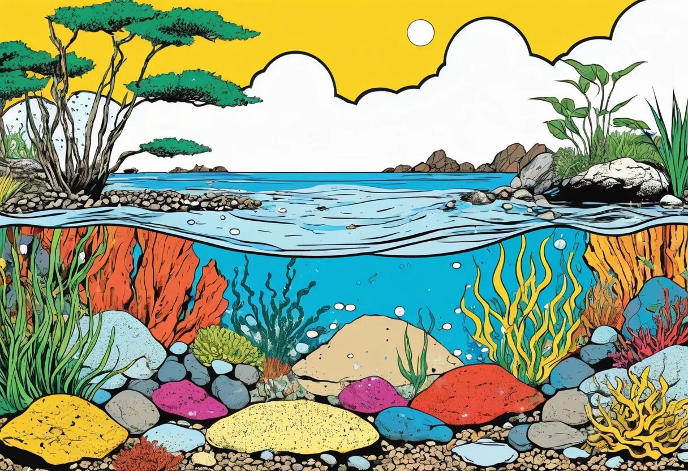

Iwagumi Aquascape – Steine, Pflanzen, Layout und Pflege minimalistisch planen
Iwagumi ist die Königsdisziplin des Aquascapings. Wenige Steine, ein flächiger Bodendecker, klare Linien – das Layout wirkt einfach, fast puristisch. Doch genau diese Schlichtheit ist trügerisch: Hinter jedem perfekten Iwagumi-Layout steckt ein ausgeklügelter Plan, jahrelange Erfahrung und ein tiefes Verständnis für Proportionen, Materialien und die Bedürfnisse des Mini-Ökosystems. In diesem Guide zeige ich dir, wie du ein Iwagumi-Aquascape von Grund auf planst, aufbaust und pflegst – vom ersten Stein bis zum fertigen Teppich.
Der Begriff Iwagumi stammt aus dem Japanischen und bedeutet wörtlich „Felsformation“. Geprägt wurde der Stil von Takashi Amano, dem Pionier des modernen Aquascapings. In seinen Layouts setzte er Steine nicht als Dekoration, sondern als dramatische Landschaftselemente ein – Berge, Klippen, Felsvorsprünge, die eine ganze Unterwasserlandschaft andeuten. Die Pflanzen dienen nicht als Blickfang, sondern als Kulisse, die die Steine in Szene setzt. Das Ziel: eine natürliche, zeitlose Landschaft, die Ruhe und Klarheit ausstrahlt.
Was Iwagumi ausmacht – die Prinzipien des minimalistischen Layouts
Ein Iwagumi-Layout folgt strengen Gestaltungsregeln. Anders als bei einem üppigen holländischen Pflanzenaquarium oder einem Nature Aquarium mit vielen verschiedenen Pflanzenarten konzentriert sich Iwagumi auf das Wesentliche: eine markante Steinformation und einen homogenen Pflanzen-Teppich. Die Regeln sind einfach, aber ihre Umsetzung erfordert Disziplin und ein gutes Auge.
Die drei Grundprinzipien
- Ungerade Anzahl von Steinen: Die klassische Iwagumi-Komposition besteht aus drei Steinen – einem Hauptstein (Ōishi), einem Nebenstein (Fukuishi) und einem kleinen Akzentstein (Sōsōishi). Fünf oder sieben Steine sind ebenfalls möglich, aber nie eine gerade Zahl. Ungerade Anzahlen wirken natürlicher und spannungsreicher.
- Asymmetrie: Die Steine werden nie symmetrisch angeordnet. Der Hauptstein steht nicht in der Mitte, sondern etwa auf einem Drittel der Beckenbreite (Goldener Schnitt). Der Nebenstein steht auf der gegenüberliegenden Seite, etwas zurückgesetzt. Der Akzentstein ergänzt die Komposition im Vordergrund.
- Blickführung: Die Steine erzeugen eine diagonale Linie, die den Blick des Betrachters durch das Becken führt. Die Linie sollte nicht parallel zur Frontscheibe verlaufen, sondern leicht schräg – das erzeugt Tiefe und Dynamik.
Harmonie-Ishi (Ausrichtung der Steine)
Ein oft übersehenes Detail ist die Ausrichtung der Steine zueinander. In der japanischen Ästhetik sollten alle Steine „in die gleiche Richtung schauen“ – das bedeutet, die längere Achse jedes Steins sollte in dieselbe Himmelsrichtung zeigen. Steine, die gegeneinander gerichtet sind, erzeugen optische Spannung und wirken unruhig. Betrachte deine Steine von oben und drehe sie so lange, bis sie eine einheitliche, fließende Linie ergeben.
Steinarten und Hardscape – die richtigen Materialien wählen
Nicht jeder Stein eignet sich für ein Iwagumi-Layout. Die Steine sollten eine einheitliche Färbung und Struktur haben – idealerweise alle vom gleichen Typ. Bunte Mischungen zerstören die natürliche Wirkung. Hier sind die beliebtesten Steinarten für Iwagumi:
| Steinart | Eigenschaften | Wirkung auf Wasserwerte | Preis |
|---|---|---|---|
| Seiryu Stone | Grau-bläulich, scharfkantig, mit weißen Calcit-Adern. Sehr beliebt für Iwagumi, weil er eine markante Textur hat. | Kann KH und pH leicht erhöhen (Calcit). Teste vor dem Einsatz mit Essig: Schäumt der Stein (Calcit-Reaktion), solltest du ihn vorwässern. | Mittel |
| Dragon Stone (Ohko) | Braun-beige, höhlenartige Struktur, leicht zu bearbeiten. Sehr natürlich wirkend, aber weicher als Seiryu. | Nahezu neutral. Verändert die Wasserwerte kaum. | Mittel–Hoch |
| Ryö Stone | Dunkelgrau bis schwarz, glatte Oberfläche, sehr dicht. Der Klassiker von Takashi Amano – aber schwer zu bekommen. | Neutral. Perfekt für weiche Wasserbiotope. | Hoch |
| Lava Rock | Rötlich-braun, porös, sehr leicht. Ideal für große Steinformationen, weil er weniger wiegt. | Neutral. Poröse Oberfläche bietet Ansiedlungsfläche für Bakterien. | Niedrig |
| Mini-Landschaft-Steine | Verschiedene graue und schwarze Sorten aus dem Baumarkt. Achte auf Kalkfreiheit (Essigtest!). | Varriert – immer testen! | Niedrig |
Layout-Regeln – Proportionen und Positionierung
Ein perfektes Iwagumi-Layout ist kein Zufallsprodukt. Es folgt mathematischen und ästhetischen Regeln, die seit Jahrhunderten in der japanischen Gartenkunst angewendet werden.
Der Goldene Schnitt im Iwagumi
Der Hauptstein (Ōishi) wird nicht in der Mitte des Beckens platziert, sondern auf einer der beiden Drittellinien – etwa bei 1/3 oder 2/3 der Beckenbreite. Das erzeugt eine asymmetrische, spannungsvolle Komposition. Die restlichen Steine ordnest du entlang einer gedachten Diagonalen an, die von diesem Punkt ausgeht. Die Diagonale sollte nicht steiler als 30 Grad und nicht flacher als 15 Grad sein – sonst wirkt das Layout entweder zu steif oder zu beliebig.
Die richtige Steingröße
Der Hauptstein sollte etwa ein Drittel der Aquarienhöhe hoch sein. Bei einem 60 cm hohen Becken suchst du also einen Stein von etwa 20 cm Höhe. Der Nebenstein ist etwa halb so groß wie der Hauptstein. Der Akzentstein ist noch einmal ein Drittel kleiner. Diese Proportionen (1 : 0,5 : 0,33) wirken harmonisch und natürlich. Größere Abweichungen sind möglich, aber dann brauchst du ein sehr gutes Auge für Komposition.
Positionierung der Steine im Detail
- Ōishi (Hauptstein): Auf der vorderen Drittellinie, etwa 1/3 oder 2/3 der Beckenbreite. Etwa 5–8 cm in den Bodengrund eingegraben, damit er stabil steht und natürlich wirkt.
- Fukuishi (Nebenstein): Auf der gegenüberliegenden Seite des Hauptsteins, etwas weiter hinten platziert. Er bildet den Gegenpol zur Hauptformation.
- Sōsōishi (Akzentstein): Am Fuß des Hauptsteins oder zwischen Haupt- und Nebenstein. Er schließt die Lücke und gibt der Komposition den letzten Schliff.
- Zusätzliche Steine: Bei 5-Stein-Layouts kommen zwei weitere kleinere Steine hinzu, die entlang der Diagonalen verteilt werden. Achte darauf, dass sie die Blickführung unterstützen, nicht stören.
Bodendecker und Pflanzen für Iwagumi
Die Pflanzenauswahl im Iwagumi ist bewusst reduziert. Meist wird nur eine oder zwei Pflanzenarten verwendet – ein Bodendecker für den Vordergrund und eventuell eine zweite Art für Akzente. Die Pflanzen sollen die Steine betonen, nicht überwuchern.
Die besten Bodendecker für Iwagumi
| Pflanze | Wuchsform | Ansprüche | Besonderheit |
|---|---|---|---|
| Hemianthus callitrichoides (Cuba-Haar) | Feinster, dichter Teppich, 1–3 cm hoch | Sehr hoch: Starkes Licht + CO₂ + Eisen | Der König der Bodendecker. Schwierig, aber atemberaubend. |
| Glossostigma elatinoides | Flächiger, kriechender Teppich, 2–4 cm hoch | Hoch: Starkes Licht + CO₂ | Schnell wachsend, gut für Anfänger im Iwagumi geeignet. |
| Eleocharis parvula (Zwergnadelsimse) | Grasartige, feine Halme, 5–10 cm hoch | Mittel: Mittleres Licht, CO₂ hilfreich | Erzeugt eine Wiesenoptik. Sehr robust. |
| Micranthemum tweediei (Monte Carlo) | Dichter, niedriger Teppich | Mittel–Hoch: Kommt mit etwas weniger Licht aus als Cuba | Die beste Alternative zu Cuba für etwas weniger starke Beleuchtung. |
| Marsilea hirsuta | Kleiner Kleeblatt-Teppich, 2–5 cm hoch | Niedrig–Mittel: Kommt auch ohne CO₂ aus | Langsamer, aber extrem robust. Ideal für Low-Tech-Iwagumi. |
Akzentpflanzen für Iwagumi
Wenn überhaupt eine zweite Pflanzenart eingesetzt wird, dann als dezenter Akzent. Beliebt sind kleinblättrige Stängelpflanzen wie Rotala rotundifolia (hinter den Steinen) oder eine Moosart (auf den Steinen). Meine Empfehlung: Verzichte auf die zweite Art, bis der Teppich vollständig geschlossen ist. Erst dann siehst du, ob überhaupt eine Lücke besteht, die gefüllt werden muss.
CO₂, Licht und Nährstoffe – die technische Basis
Iwagumi ist technisch anspruchsvoll. Die flächigen Bodendecker brauchen starkes Licht und eine ausreichende CO₂-Versorgung. Ohne CO₂ wachsen die meisten Bodendecker nur langsam, werden hoch und verlieren ihren Teppich-Charakter.
Licht
Für Iwagumi empfehle ich eine Beleuchtungsstärke von mindestens 50–80 Lumen pro Liter (bei LED) oder 0,5–0,8 Watt pro Liter bei T5-Leuchtstoffröhren. Die Beleuchtungsdauer sollte anfangs 6 Stunden betragen und nach 4 Wochen auf 8 Stunden erhöht werden. Zu viel Licht ohne ausreichend CO₂ führt zwangsläufig zu Algen – ein häufiger Fehler bei Iwagumi-Einsteigern.
CO₂
Eine Druckgas-CO₂-Anlage ist für Iwagumi mit Cuba, Glossostigma oder Monte Carlo praktisch unerlässlich. Die CO₂-Konzentration sollte bei 25–35 mg/l liegen – messbar mit einem Dauertest (Drop Checker). Die CO₂-Zufuhr schaltest du 1 Stunde vor dem Licht ein und 1 Stunde vor dem Licht aus. So ist der CO₂-Gehalt stabil, wenn die Pflanzen mit der Photosynthese beginnen.
Nährstoffe
Düngen ist im Iwagumi ein Balanceakt. Ein NPK-Dünger (Makronährstoffe) plus ein Eisendünger (Mikronährstoffe) sind die Basis. Ich empfehle einen Volldünger, der alle Spurenelemente enthält. Dosiere anfangs vorsichtig (50 % der Herstellerangabe) und steigere langsam, wenn die Pflanzen gut wachsen. Achte auf die Algen-Indikatoren: Grüne Punktalgen auf der Scheibe deuten auf Nährstoffmangel hin, Fadenalgen auf ein Ungleichgewicht von Licht, CO₂ und Düngung.
🛒 Aquascaping-Steine für Iwagumi
Hardscape für minimalistische Steinlayouts – Seiryu-, Dragon- oder Ryō-Steine für dein Iwagumi-Projekt.
Werbelink: Als Amazon-Partner verdienen wir an qualifizierten Käufen.
Startphase – vom Trockenlayout zum gefluteten Becken
Die Startphase entscheidet über Erfolg oder Misserfolg eines Iwagumi-Aquascapes. Ich empfehle die Dry-Start-Methode (DSM) für Bodendecker – sie ist in den ersten 4–6 Wochen deutlich einfacher als die Flutmethode, weil Algen in der feuchten Anfangsphase kaum eine Chance haben.
Dry-Start-Methode (DSM) Schritt für Schritt
- Bodengrund vorbereiten: Eine Schicht Nährboden (2–3 cm) mit einer Deckschicht aus feinem Kies oder Sand (2–3 cm) abdecken. Den Nährboden gut anfeuchten – er sollte feucht, aber nicht nass sein.
- Steine setzen: Die Steine nach dem Layout-Plan positionieren und etwa 2–3 cm tief in den Bodengrund drücken. Die Position mit einem Bleistift auf der Frontscheibe markieren, falls die Steine später verrutschen.
- Pflanzen einsetzen: Die Bodendecker (Cuba, Glossostigma, Monte Carlo) mit einer feinen Pinzette in den feuchten Bodengrund setzen. Setze kleine Pflänzchen im Abstand von 2–3 cm – sie werden sich zu einem Teppich verbinden.
- Abdecken: Das Becken mit Frischhaltefolie abdecken und täglich 30–60 Minuten lüften. Die Luftfeuchtigkeit sollte nahe 100 % sein. Besprühe die Pflanzen täglich mit einer Sprühflasche.
- Beleuchtung: Schalte das Licht für 8–10 Stunden pro Tag ein. Das fördert das Wurzelwachstum.
- Dauer: Nach 4–8 Wochen sollten die Pflanzen angewurzelt sein und erste Ausläufer bilden. Dann flutest du das Becken langsam (über 2–3 Stunden) mit entchloriertem Wasser.
Pflege und Schnitt – den Teppich in Form halten
Nach der Flutung beginnt die eigentliche Pflege. Der Bodendecker wächst jetzt schneller, muss aber regelmäßig geschnitten werden, um dicht und niedrig zu bleiben. Ein Teppich aus Cuba oder Glossostigma sollte alle 7–14 Tage geschnitten werden. Verwende eine scharfe, gebogene Aquascaping-Schere und schneide den Teppich auf 1–2 cm Höhe zurück. Wichtig: Nicht zu tief schneiden, sonst lösen sich die Pflänzchen vom Bodengrund.
Wöchentliche Pflege im Iwagumi
- Wasserwechsel: 30–50 % des Wassers wöchentlich ersetzen. Das ist mehr als bei einem normalen Gesellschaftsbecken, weil die Iwagumi-Pflanzen viele Nährstoffe verbrauchen und genauso viele Abfallstoffe produzieren.
- Düngung: Nach dem Wasserwechsel düngen. Dosierung nach Herstellerangabe, aber je nach Pflanzenwachstum anpassen.
- CO₂-Kontrolle: Den Drop Checker täglich prüfen. Der CO₂-Gehalt sollte stabil zwischen 25–35 mg/l liegen.
- Algenkontrolle: Kleine Algenansammlungen sofort entfernen. Besonders Fadenalgen an den Steinen sollten nicht überhandnehmen. Eine Gruppe Amanogarnelen (5–10 Tiere) hält die Algen in Schach.
- Schnitt: Den Teppich alle 1–2 Wochen schneiden. Auch die Steine auf Algenbelag prüfen und gegebenenfalls mit einer weichen Bürste reinigen.
Fehlerbilder – typische Probleme im Iwagumi
Auch erfahrene Aquascaper kämpfen mit den typischen Iwagumi-Problemen. Hier sind die häufigsten Fehlerbilder und wie du sie behebst:
| Problem | Ursache | Lösung |
|---|---|---|
| Bodendecker wächst nicht flächig, sondern hoch | Zu wenig Licht oder CO₂ | Lichtstärke erhöhen, CO₂-Zufuhr optimieren, Beleuchtungsdauer prüfen. |
| Fadenalgen auf dem Teppich | Ungleichgewicht Licht/CO₂/Nährstoffe | CO₂ erhöhen (Ziel 30 mg/l), Licht für 1–2 Wochen auf 6 Stunden reduzieren. |
| Grüne Punktalgen auf der Scheibe | Nährstoffmangel (meist Phosphat oder Eisen) | Düngung anpassen, Phosphat und Eisen kontrollieren. |
| Steine sind von Algen überzogen | Zu viel Licht, zu wenig Pflanzenmasse | Amanogarnelen einsetzen, Beleuchtungsdauer reduzieren. |
| Teppich löst sich vom Bodengrund | Zu tief geschnitten oder Strömung zu stark | Strömung reduzieren, Teppich nicht unter 1 cm schneiden. |
| Blaualgen (Cyanobakterien) auf dem Bodengrund | Zu wenig Strömung, organische Belastung | Strömung erhöhen, Mulm absaugen, Wasserwechsel intensivieren. |
FAQ – häufige Fragen zu Iwagumi
Welche Beckengröße ist ideal für Iwagumi?
Ideal sind Becken ab 60 cm Länge (60×30×36 cm oder 90×45×45 cm). Kleinere Becken sind möglich (30–45 cm), aber dann wird der Steinsatz sehr filigran. Bei 90 cm Länge hast du genug Platz für eine anspruchsvolle Steinformation mit Tiefenwirkung.
Kann ich Iwagumi ohne CO₂ betreiben?
Möglich, aber schwierig. Die typischen Bodendecker (Cuba, Glossostigma) brauchen CO₂ für einen dichten Teppich. Ohne CO₂ bleibst du auf langsam wachsende Alternativen wie Marsilea hirsuta oder Eleocharis parvula beschränkt.
Wie viele Fische passen in ein Iwagumi?
Iwagumi ist pflanzenzentriert – der Fischbesatz ist bewusst niedrig. Ein Schwarm von 10–15 kleinen Schwarmfischen (Microdevario kubotai, Boraras brigittae, Trigonostigma espei) und eine Gruppe von 5–10 Amanogarnelen sind völlig ausreichend. Der Fokus bleibt auf der Landschaft, nicht auf den Tieren.
Wie verhindere ich, dass die Steine von Algen überwuchert werden?
Algen auf den Steinen sind oft ein Zeichen für zu viel Licht. Reduziere die Beleuchtungsdauer auf 6 Stunden und setze eine Putzmannschaft aus Amanogarnelen und Rennschnecken ein. Kontrolliere auch die CO₂-Versorgung – bei stabilem CO₂ haben Algen weniger Chancen.
Fazit – Iwagumi lebt von Reduktion und Geduld
Ein Iwagumi-Aquascape ist kein Projekt für Ungeduldige. Die ersten Wochen sind technisch anspruchsvoll, der Teppich wächst langsam, und die Algen lauern an jeder Ecke. Doch wenn die Steinformation steht, der Teppich dicht und grün ist und die kleinen Schwarmfische durch die Landschaft gleiten, dann ist das Ergebnis jede Mühe wert. Iwagumi lehrt dich, loszulassen, auf das Wesentliche zu reduzieren und natürliche Schönheit zu erkennen. Es ist die vielleicht erfüllendste Form der Aquaristik – und eine Schule der Geduld.
Mehr zum Thema Aquascaping findest du im Aquascaping-Guide für Anfänger und in unserem Guide zu Hardscape-Steinen. Für die Pflanzenpflege empfehle ich den Düngung-Guide.
🌿 Pflanzen für Iwagumi-Layouts
Bodendecker wie Cuba, Glossostigma und Monte Carlo – das richtige Equipment für dein Iwagumi-Projekt.
Werbelink: Als Amazon-Partner verdienen wir an qualifizierten Käufen.
🐾 Auch interessant: Du interessierst dich für Haustiere? Auf haustierzentrum.com findest du Ratgeber zu Hunden, Katzen, Kleintieren und mehr – von der Anschaffung bis zur Pflege.
[ AdSense-Werbefläche ]